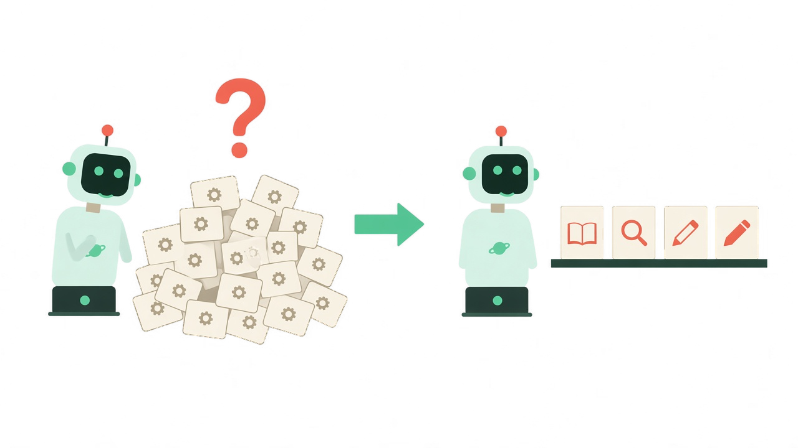
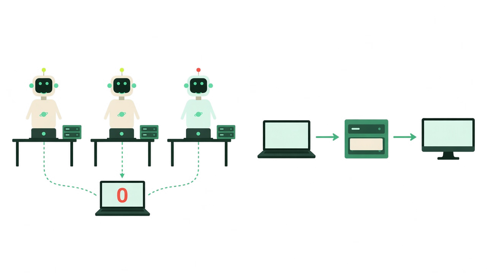
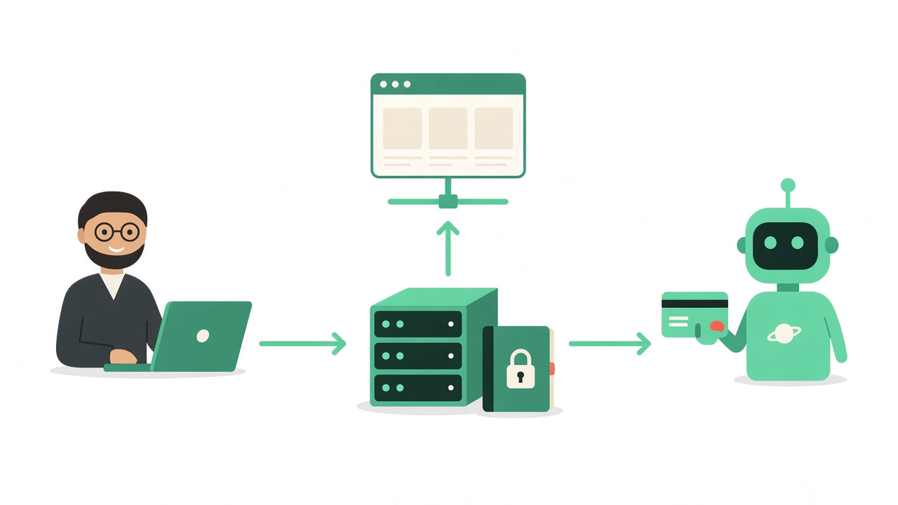

I gave a talk on this at the MCP Dev Summit in Toronto on 6 October 2026, called MCP as a Platform. The short version is the one I wish I'd had a year earlier.
One server teaches you the protocol. A portfolio teaches you what MCP actually is. I only found the mistakes by building the next server, then the one after that. Every example below lives in one small open-source server you can clone, mcp-ticket-demo. The tickets are a stand-in. Orders, assets and containers fail the same way.
The first version is a lie
The first version of any MCP server is deceptively simple. A client talks to your server, and the server exposes one tool: request(path, method, query, body). That is a working server. I have shipped that shape, and it does call the API.
Then the real requests arrive. Create one. Update one. Close one. What “no results” means, so the model stops retrying. Who is allowed to call the write tools. How anyone finds the server at all.
The early question is “can the model call this API?” The later question is “can a developer, and an agent, operate this tool safely?” Those are different products. The second one is where scale starts.
With dozens of tools, the name is all the model has
With a few tools, names barely matter. The model can read the descriptions and pick. Past a few dozen, it is choosing from a menu it cannot hold in its head, and the name is most of what it sees.
search_tickets(query, status, requester_email, limit) is easier to use, and safer, than request(path, method, query, body). The second one is less code for me and every decision for the model. I had handed it a browser for my API and asked it to invent the right URL.
More tools didn’t mean more capability
I learned this the hard way. One server grew seven query tools: query_records, query_with_filter, query_with_fields, query_object_structure, query_work_orders, query_assets and query_locations. Every name was correct. The model still picked the wrong one.
Technically precise. Operationally confusing.

The MCP server I built and open-sourced for IBM Cloud Code Engine had the same problem at a bigger size. It grew to about 112 tools. I folded it to about 28, one per noun, with an action on each. The ticket demo went from 31 tools to 19, and I now think of it the way I think of a database:
- What exists.
describe_serverandget_schema. The model asks what it is allowed to do, then what shape a question needs. - Read it. One
run_query, over tickets, customers, the call trace. One query tool grows when you add a schema. It does not grow when you add a near-duplicate name. - Change it. Writes stay verbs.
create_ticket,add_comment,close_ticket. Each keeps its own name, its own scope, and its own warning. - Operate it.
update_settings,issue_api_key. The boring buttons, with the same rules.
Three tools replaced seven query tools, and selection stopped being a coin flip. That is the scale move I would make first: fewer names, sharper intent.
Alive is not the same as works
The failure I hit most often was silent. The IDE said “0 tools discovered.” No error. No warning. The client cannot tell you why, because the client never got a tool list to complain about.
So the server has to answer for itself. A health check that reports a tool count tells you the process is up and the tools are registered. A ping only proves the process answered. I also keep a test route that actually calls the tools. Ping says the server is alive. Calling the tools says they work.
Then a second silent failure: the tools you see belong to a different copy than the one you think you deployed. Each IDE’s local config can spawn its own process, so two editors hold two memories. npx …@latest in one place and a bundled copy in an extension means one of them is stale. Once, another server answered on the port, and its tools showed up as mine.

The fix I settled on is boring, which is how I know it scales. One shared server over HTTP, and every response says which copy it is: the name, the machine, the URL. The same identity on health, on the test route, and on describe_server. Trust the tool list only after you’ve checked which server sent it.
A cousin of this bit me in deploy. Redeploying gave the service a new hostname, and yesterday’s config kept calling the old one. Read the endpoint after it lands. Don’t paste a URL by hand and expect it to survive the next deploy.
A successful call can still be the wrong outcome
Scale makes this worse, because nobody is watching each call.
My ticket tool returned 201 Created every time. If the caller left out the customer’s email, my code quietly used the bot’s own service account. The ticket looked perfect. Every reply went to the bot. I wrote a seven-part series about that scar, so I won’t retell it here. The rule is the part that scales: a tool isn’t done when the API call succeeds. It’s done when the next thing that happens is right.
Say it twice. The tool description says it before the call: always pass the real customer’s email, and here is what happens if you don’t. The result says it again after the call, including what to do next. The description stops the mistake. The result catches the one that slips through.
The same shape fixes a different loop. A bare “403 Forbidden” sent the model into retries, tweaking a field each time, until it told the user the system was unavailable. Nothing was down. The key was missing a scope. The refusal now names the scope, says where to get a key, and says to retry once. A bare refusal starts a loop. A refusal that names the fix ends it.
One detail matters once you lock tools down. A locked tool still shows up in the tool list, in every auth mode I ship. The model can see it and cannot use it. The refusal is the only place left to explain yourself, so don’t waste it on “forbidden.”
Not everyone who operates it has the IDE
This is the part I didn’t expect. The people who need the server most on a bad day are not in the editor. Ops, security and support want a URL. A hosted copy has no IDE sitting next to it.
So the server grew its own pages: is it up, do the tools actually work, who holds which key, which tools are locked, and a log of what was called. Keys, gates and the trace live on the server, which means every client sees the same truth.
Then I made every button a tool as well. Change the auth mode, issue a key, read the trace. A script can make the same change on every copy: laptop, staging, production. In an incident, revoke a key or lock a tool everywhere, in seconds. An ops agent can do the same thing, because it never needed the browser. Same scopes, one audit trail, no redeploy.

That is the control plane. The extension and the admin UI are how people get in. The MCP server is the capability. The agent is an operator, not only a caller.
A server that only answers is a server you have to nag
An agent that polls “anything new?” spends most of its tokens hearing “no.” One open stream is cheaper and faster: the server says a ticket was created, the agent looks, and a person gets pulled in only when the pattern matters. Three outage tickets in ten minutes is a question for a human. One routine ticket is not.
Agents that act when something happens, not only when someone asks. That’s the difference between a tool and a platform.
What I now put on every next server
Three things, and then I stop adding process:
- Prove it. A health check with a tool count, and a test that calls the tools. If the IDE says zero tools, ask the server.
- Give it front doors. One install for the people in an IDE, and a URL for the people who operate it. One server, one memory, and every response names which copy it is.
- Make it discoverable.
describe_serverfirst,get_schemafor the shape, and tool names that say the intent. Reads collapse into queries. Writes stay verbs.
Build one. Publish it. Then make the next one easier to use than the last. That last step is the whole job. A portfolio of servers only gets cheaper if each one teaches the next.
The demo is github.com/markusvankempen/mcp-ticket-demo, and the talk, with every slide, is at markusvankempen.github.io/linuxfoundation-mcp-dev-summit. Clone it, break it, and read the refusals. They are the article.
Which of these did you hit first: too many tools, the wrong copy of the server, or a green success that wasn’t? Tell me in the comments.
Cheers,
Markus
No bug 🐛 too small, no syntax too weird 🔍 🤔 🔨 🦾